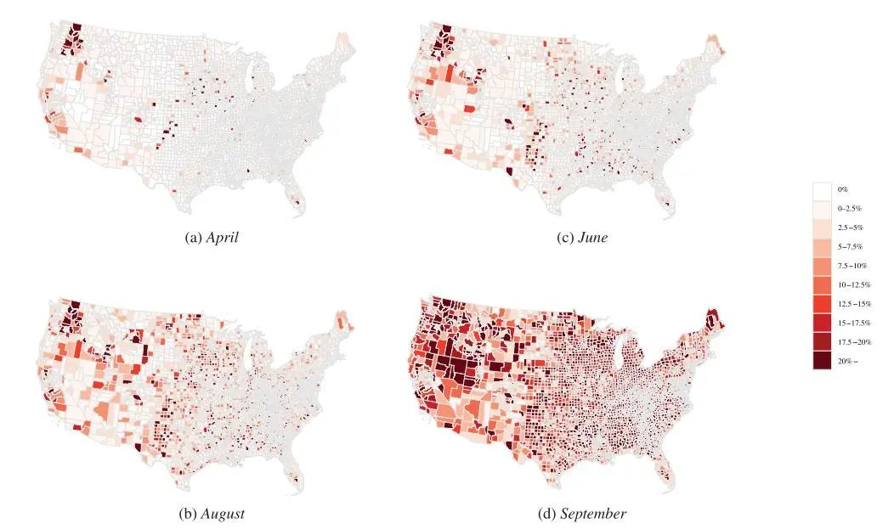
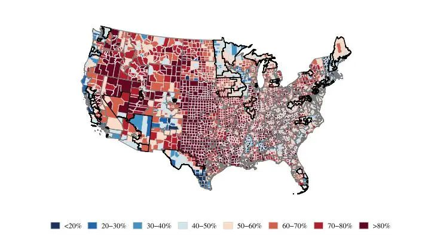
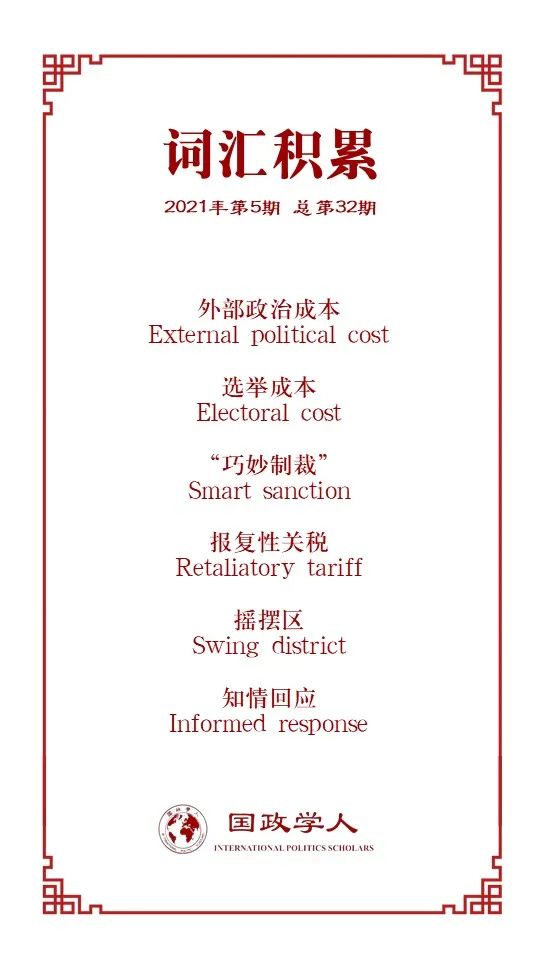

收录于合集 #中美关系 13个

作品简介
【作者】 Sung Eun Kim，韩国大学政治科学与国际关系系助理教授，主要研究国际和比较政治经济学；Yotam Margalit，特拉维夫大学政治学系教授，主要研究国际和比较政治经济学。
【编译】 陈想（国政学人编译员，对外经济贸易大学国际关系学院）
【校对】 扎西旺姆
【审核】 王川
【排版】 韩心蕊
【美编 】杜丛竹
【来源】 Kim, S., & Margalit, Y. (2021). Tariffs As Electoral Weapons: The Political Geography of the US–China Trade War. International Organization , 75(1), 1-38.
【归档】 《国际关系前沿》2021年第5期，总第32期。
期刊简介
《国际组织》（ International Organization ），创刊于1947年，是由剑桥大学出版社代表国际组织基金会出版的同行评议季刊。涵盖外交政策、国际关系、国际与比较政治经济学、安全政策、环境争端与解决、欧洲一体化、联盟模式与战争、谈判与冲突解决、经济发展与调整、国际资本流动等多个国际事务领域。根据Journal Citation Reports显示，2019年其影响因子为5，在95种国际关系期刊中排名第2。
作为选举武器的关税：
中美贸易战的政治地理学
Tariffs As Electoral Weapons:
The Political Geography of the US – China Trade War
Sung Eun Kim
Yotam Margalit
内容提要
长期以来，各国政府在试图强加自己的意愿或获得让步时，一直使用经济手段向其他国家施加压力。从禁运、制裁、违约威胁到向世界贸易组织（WTO）提出申诉，手段层出不穷。然而在2018年，世界两大经济体——中国和美国之间不断升级的紧张局势，使双方以前所未有的规模使用了不同形式的经济压力，即对贸易伙伴主要出口商品征收关税。
传统上，政府征收关税的决定被视为政治家笼络利益集团或从游说团体处获得财政捐款的工具。然而，中美之间不断升级的贸易战展现出贸易政治的另一面。中国对特定产品征收关税的策略，也许是为向其贸易伙伴施加外部政治成本（external political cost），而非迎合国内利益集团的需求。
本文对贸易战的分析提出了三个重要问题。首先，中国选择对特定产品征收关税在多大程度上反映了旨在减少美国国内对特朗普政党支持的政治战略？其次，如果它是出于政治动机，那么在2018年中期选举中，该战略在对共和党候选人施加选举成本方面的成效如何？最后，为什么选民对征收关税的政治反应是这样的？
分析表明，中国报复性关税的产品选择遵循一个明确的政治逻辑，即在共和党人社会基础雄厚的地区生产的产品更可能成为目标。因此，如果贸易关系恶化严重影响某地理区域或行业，这些区域的居民或目标行业的工人更有可能在选举中惩罚共和党人。证据表明，更易受到关税影响的选民可能更了解不断升级的贸易战，认识到其不利影响，并认为特朗普和共和党国会议员应对这一局势负责。
本文对贸易在选举中扮演的角色提供新的研究发现：贸易自由化的负面影响会对投票产生重大作用。这与罗戈夫斯基（Rogowski）提出的框架一致，表明贸易风险的变化(不论增加还是减少)具有重要的、理论上可预测的政治影响。研究表明，战略性制定的关税政策可以作为一种巧妙的制裁形式，对贸易伙伴的政府施加有针对性的选举成本（electoral cost）。
文章导读
01
贸易政策、报复与反当权者投票
近期大量研究表明，贸易自由化的不利经济影响带来了显著的选举后果。这些研究仍未解决这样一个问题：这些信息是否真的会影响人们的投票方式？首先，在贸易问题成为突出话题时，人们可能从新闻中了解到这一点。选民也可能从他们偏好的政治家或反对党代表那里获得信息。他们还可以从雇主或有组织的利益集团那里了解到贸易的影响，他们可能试图在特定的政策问题或倡议上动员工人。
与之相反的逻辑是，外国政府可以通过对有政治重要性的行业和选区的商品征收关税来寻求贸易伙伴的让步。这与“巧妙制裁”（smart sanction）的逻辑相似，这种工具在针对政府支持者的同时将对更广泛社会的不利影响降到最低。一些并行研究为本文的一些猜想提供依据。费泽尔和施瓦茨（Fetzer and Schwarz）发现，传统上共和党支持率较高的地区更可能成为美国主要贸易伙伴征收关税的目标，不仅仅是中国。而夏芝和厄尔巴奇（Chyzh and Urbatsch）的调查显示，共和党的选票份额在大豆生产县中下降尤为明显，这是中国早期关税的一个突出目标。
本文的研究重点是选民对贸易战反应背后的行为机制，以及地理单位遭受报复性关税（retaliatory tariff）的程度。这从国内政治层面为中美贸易战提供了不同的见解。
02
数据
·关税影响范围
本文衡量报复性关税的影响范围，即每一地级区受雇于目标行业的工人比例。这一衡量标准通过将商品与雇佣关系联系起来，反映关税影响程度的地理差异。目标行业就业份额接近易受报复性关税影响的劳动力规模，这反映了战略预期的选举成本。数据反映不同地区和州所受影响差异极大。

图一 国家层面受中国报复性关税影响程度
·选举地理
为检验报复性政策的政治化程度及其选举结果，本文将受关税影响率与选举的地区结合起来。并将摇摆区（swing district）定义为在2014年和2016年众议院选举中，两党的选票份额在40%到60%之间的地区。进而考虑调查对象是否在摇摆选区内。
03
中国报复性关税的政治目标
中国对关税产品的选择在多大程度上反映了为减少共和党候选人选举支持的努力？鉴于在美国的许多地区，两党之一享有巨大、几乎不容置疑的优势，中国可能将注意力集中在共和党候选人竞争的摇摆地区，因为在这种情况下，即使投票的微小变化也会对最终结果产生巨大影响。
在第一轮报复性关税中，中国将坚果列入商品清单。事实证明，坚果种植业集中在加利福尼亚，科恩县（Kern）和弗雷斯科县（Fresco）是占全美坚果种植业就业人数30%以上的地区，也是共和党的两大据点。因此，中国对坚果征收的关税对加州第21区共和党人占多数县的经济产生了重大的不利影响。
研究同时发现，对一篮子不太依赖美国进口的商品存在广泛的替代关税安排，这进一步表明，中国的主要目的是向共和党施加最大的政治压力，而非最大限度减少对中国市场进口的潜在干扰。本文观察到的生产政治地理和地区受关税影响率间强有力的联系表明，选举考量在指导中国报复性关税的选择中发挥了重要作用。

图二 共和党人在众议院两党选举中的份额与2014年和2016年选举中的竞争区
04
中国报复性关税的选举影响
中国对共和党候选人施加选举成本的策略有多成功？本文通过考察2016年至2018年众议院选举期间共和党选票份额的县级变化，来评估中国报复性关税的选举后果。结果表明，中国在向共和党施加选举成本方面的策略相当奏效。与上一次选举相比，受中国报复性关税影响的工人比例每增加一个百分点，共和党的投票比例就会下降0.12至0.47个百分点，其间的差别取决于关税的征收时间。这一投票模式可能反映选民对贸易战未来影响的预期，也是对支持总统贸易政策的共和党候选人的指责。结果表明，关税战对众议院选举的影响虽然适中，但也不容忽视，特别是在美国选举地理的不公平和高度两极化特征下，只有少数席位具有真正的竞争力。
最后，本文考察中国对农业和非农业部门征收关税可能产生的多重影响（heterogeneous effect）。鉴于中国作为美国农产品出口市场的重要性，报复性关税对美国农业部门而言尤其沉痛。为缓解农民的不满，特朗普政府承诺提供120亿美元的补贴，但到选举时只支付了8.38亿美元。本文发现民主党在中国关税目标领域的投票额增加，可能是由于前共和党选民将其选票转投民主党候选人。然而，这也可能来自动员新选民投票的关税。
05
中国的关税政策是特例吗？
与中国不断升级的贸易战是目前为止最突出的，但不是美国贸易争端的唯一前线。自特朗普当选总统以来，美国在贸易政策上一直与欧盟及北美自由贸易协定(NAFTA)伙伴国墨西哥和加拿大存在冲突。作为争端的一部分，这些贸易伙伴也通过对美国商品征收关税对抗美国的措施。他们的产品选择策略与中国有多少相似性？这些关税对选举有相似影响吗？为比较美国贸易伙伴采取的报复措施对选举的影响，本文分析其在2018年中期选举中选择的关税与共和党候选人支持率之间的关系。
06
机制：共和党候选人缘何受到惩罚？
上述研究结果显示，中国报复性关税的地理影响与共和党候选人在2018年选举中支持率的下降间存在密切联系。这一模式引发几个问题。人们仅仅由于经济状况恶化而投票反对执政党吗？ 也即并未纳入中美贸易战的考量？ 还是共和党支持率的下降源于公民对中美贸易战的有意识回应（conscious response），将责任归咎于他们认为应对不断升级的局势负责的人？如果是有意识回应，选民又是如何得知贸易战的？最后，选民是对自身就业状况恶化做出反应，还是对居住地经济衰退迹象做出反应？
·竞选沟通证明
为理解选民了解贸易战的方式，本文着眼于挑战党代表——民主党人，因为他们有明确的动机向选民通报贸易战的不利影响，并指责其共和党对手造成该事态的发展。这种关于贸易战的竞选宣传最常见于中国最关注的地区，即该问题更可能引起选民共鸣的地方。此外，反对派候选人可能夸大这一问题，因为其显然能通过强调总统政策成本获得更多好处。
本文计算了众议院选举中民主党和共和党候选人发表的含有“贸易战”一词的竞选出版物百分比。以这一指标为因变量(范围从0到9.6)，研究一个地区受关税影响率是否与候选人对贸易战关注程度增加有关，特别是在民主党候选人中。约35.8%的民主党候选人在与选民的竞选沟通中谈到贸易战，而这样做的共和党候选人只有8.5%。民主党候选人不仅更有可能在与选民的沟通中讨论贸易战，而且在其选区面临中国的报复性关税时，他们也更频繁地讨论贸易战。
·网络检索模式证明
为进一步评估选民接触贸易战信息与其对贸易战看法间的联系，本文研究了人们在线搜索的数据。具体而言，本文希望评估居于更易受贸易战影响地区的人是否更有可能积极寻求有关冲突信息。为此，本文从谷歌热搜中获得关于“贸易战”和“中国与关税”这两个术语的搜索频率数据。本文研究搜索指数变化是否与中国报复性关税的影响率相关。结果显示，个人网络搜索“中国关税”越多，在特定大都市地区遭受报复性关税的风险越大。在受贸易战影响较大的地区，人们对与中国不断升级的贸易关系的认识及对了解新情况的兴趣明显更高。这些发现表明，共和党支持率的下降不仅是对经济状况日益恶化的“一般性”回应，同时反映出选民对贸易战本身的知情回应（informed response）。
·个人层面数据证明
本文进而研究人们如何评估贸易战的影响，以及他们如何评估相关政治行为者在导致冲突升级中的作用。也即(1)中国关税的感知影响；(2)贸易战的责任归因。本文首先分析中国关税影响水平与贸易战认知间的联系。为评估受访者态度是否反映对其居住地或工作行业的不利影响，该模型包含有两个受影响的指标:(1)住地的劳动力在中国关税的目标行业；(2)受访者自身行业的受影响程度。研究发现，行业受影响率与受访者认为贸易战会产生负面影响之间存在很强的经验性联系。从一个完全不受关税影响的行业(如租赁、教育服务业)到一个受影响最大的行业(制造业)，受访者报告其居住地受到贸易战影响的概率增加了44.5%。
本文同时发现人们倾向于将所受到的关税影响归咎于国会中的共和党议员。受访者对贸易战的看法更多是由贸易战对其雇主和其(可能)工作前景的影响而非对其居住地的影响形成的。也就是说，贸易战带来的个人损失对人们观点的形成很重要。即使将被调查者的政治偏好纳入考量，这种影响仍然存在，这表明关税直接受害者作出的责任归因高于党派偏见的相关影响。
回到初始所提出的问题，这一分析提供了几个值得关注的见解。首先，这表明2018年投票反对共和党的转变至少在一定程度上是对贸易战升级的有意识的回应，而不仅仅是因经济形势恶化投票反对现任总统。受影响地区的人们更有可能从其候选人处得知与中国的冲突，并积极寻求相关信息。其次，人们对贸易战看法与其(已出现或预期的)经济影响密切相关。最后，就业问题或工作场所沟通对人们看待冲突和将责任归咎于政治家的方式具有重要影响。
07
总结
鉴于这些发现，一个重要的问题是，2018年中美贸易战的独特历史意义，以及其是否能提供贸易政治方面普遍教训。回溯1930年的《斯穆特- 霍利关税法案》（Smoot-Hawley Tariffs Act）或许是有益的，该法案大规模提高了900多种产品的关税，使得美国卷入最近一次大型贸易冲突。研究表明，美国关税不仅减少进口，伤害了外国贸易伙伴，还产生了类似中国对美国征收关税的政治后果。例如，麦克唐纳、奥布赖恩和卡拉汉（McDonald, O ’ Brien, and Callahan）提出的证据表明，《斯穆特- 霍利法》伤害了魁北克和加拿大草原省份关键的摇摆选民。这导致选民对执政党的放弃，也促成保守党在随后的选举中获胜。此外，研究表明，美国的贸易伙伴试图通过施加反压力来报复《斯穆特- 霍利法》。包括西班牙、意大利、瑞士和葡萄牙在内的几个欧洲国家专门针对美国征收直接报复关税。其他国家有选择地提高主要从美国进口的产品关税。
译者评述
当前国际关系学界对贸易政策工具的研究相对不足。文章深入分析和研究了中国在应对特朗普政府发起的贸易战时，以关税为政策工具，有效对特朗普利益相关选区予以反制，并取得了正面积极效果。译者认为基于这一视角依托事实经验展开对经济外交的探讨，能助力于后期经济制度工具在外交中发挥更大作用。
研究结果表明，选民对贸易政策问题很敏感，且其敏感性不仅集中于本国政府，同时也关注贸易伙伴的政策。受关税影响地区的竞选代表往往将贸易战作为选举工具，在言论中攻击执政党的不力应对，以此动员引导选民寻求更多相关信息，最终将冲突的升级归咎于执政党。选民此举不仅是对经济状况恶化作出反应，同时也是有意识地对贸易战本身作出回应。
文章同时提到，1992年关税及贸易总协定(GATT)乌拉圭回合谈判期，在法国政府拒绝美国减少农业补贴和价格支持的要求后，出现这一目标定位早期粗略版本。作为报复，美国对法国白葡萄酒实施进口限制，而这些葡萄酒产自对执政的社会党具有重要政治意义的地区。此举似乎是有效的，因为法国态度很快就软化了。中国模式与之相比更为精确且具有独特性。
最后，随着全球化的关键领域被政治化为有争议的选举问题，了解人们所依赖的信息来源以及这些信息如何影响其观点的变化显得至关重要。这对中国在“双循环”布局下开展经济外交提出了更高的要求。
词汇整理

文章观点不代表本平台观点，本平台评译分享的文章均出于专业学习之用, 不以任何盈利为目的，内容主要呈现对原文的介绍，原文内容请通过各高校购买的数据库自行下载。
好好学习，天天“在看”
国政学人
支持学术公益与知识传播
微信扫一扫赞赏作者 __赞赏
已喜欢，对作者说句悄悄话
取消 __
发送给作者
发送
最多40字，当前共字
上一页 1/3 下一页
长按二维码向我转账
支持学术公益与知识传播
受苹果公司新规定影响，微信 iOS 版的赞赏功能被关闭，可通过二维码转账支持公众号。